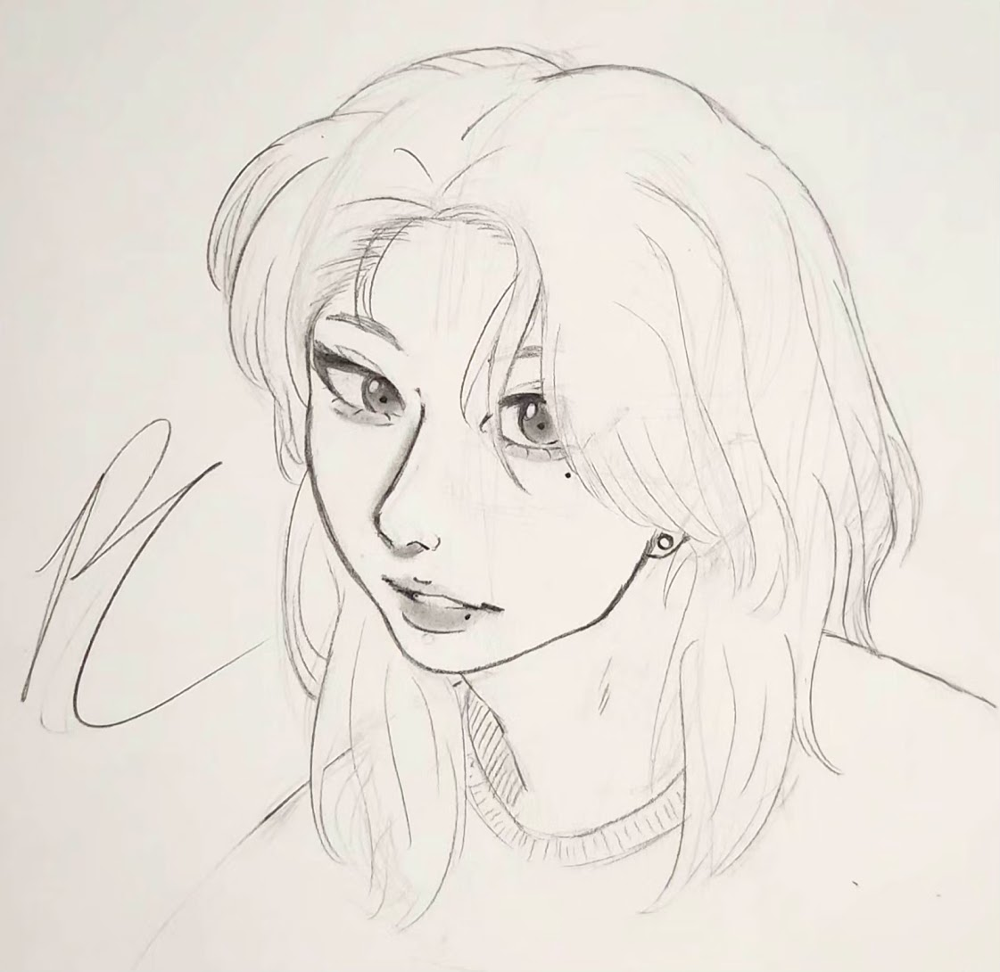

Momoka Wakui
How it came to life
Part of what inspired me to draw was having my friend around, and since he moved schools, my desire was slowly fading. That was until 2019, when I met my today's best friend who also loves to draw, and my passion came back to life.
That was when I felt the need to create more characters and build my story again. Then I made Momoka and Kim.
Momoka is one of my extroverted characters. She is chaotic and loud, but everybody loves her for being herself. She is the group's soul, and 'big sister energy'. Her favorite color is red.
Even though she is one of my oldest characters, I have very few drawings of her. My art style got better throughout the years, and since it would take me a long time to draw her, I felt the need to redesign her every time from how much my style changed. That's the reason why she looks different in every single drawing. Until this year (2025), when I decided to settle on her design for good.
Inspirations
Momoka was heavily inspired by the K-pop artist Giselle from aespa. Other inspirations were Misato Katsuragi, a character from Neon Genesis Evangelion, and one of my best female friends.